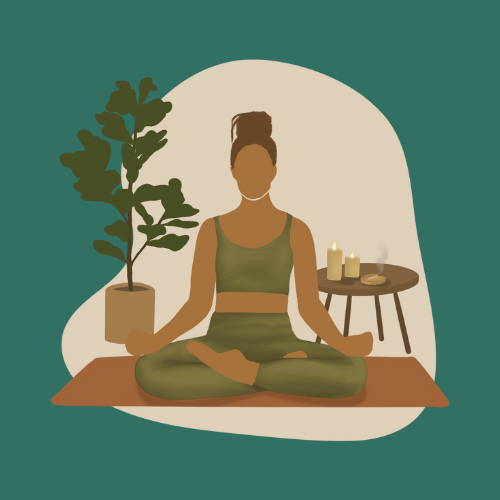

¿Qué es el Autocuidado?
El autocuidado implica una serie de actividades conscientes y rutinarias que hacemos para preservar y mejorar nuestro bienestar. Va más allá de lo físico, abarcando también el cuidado emocional, social y espiritual.
¿Qué es el Mindfulness?
Mindfulness, o atención plena, es la práctica de estar completamente presente en el momento sin juzgar lo que experimentamos. Ayuda a reducir el estrés, mejorar el enfoque y aumentar la autoaceptación.
Técnicas para mantener el equilibrio y la paz interior
- Meditación: Practicar la meditación regularmente ayuda a calmar la mente y reducir el estrés.
- Respiración profunda: Ejercicios de respiración profunda ayudan a regular el sistema nervioso, disminuyendo la ansiedad.
- Journaling: Escribir pensamientos y emociones ayuda a procesarlos y liberar cargas emocionales.
- Ejercicio físico y descanso: Mantenerte activo y descansar son pilares esenciales para el bienestar.
- Establecimiento de límites: Decir "no" cuando es necesario ayuda a mantener una vida equilibrada.
- Agradecimiento diario: Reflexionar sobre las cosas por las que te sientes agradecido ayuda a cultivar una mentalidad positiva.